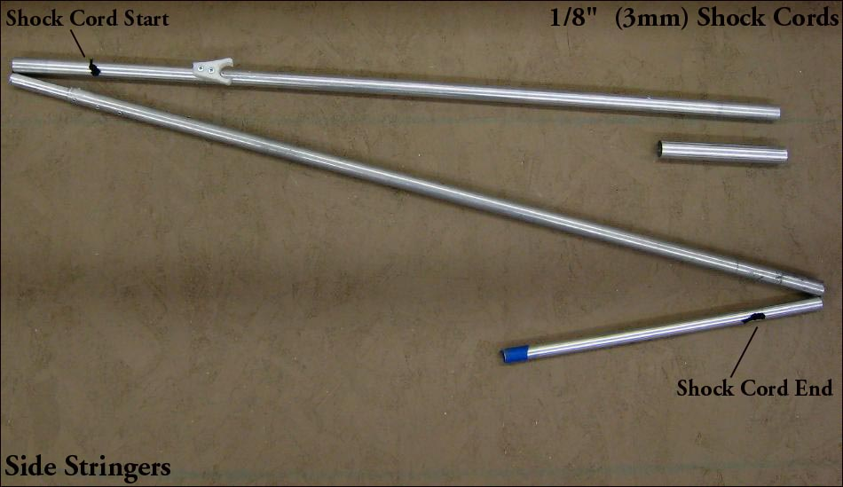

| Sonnet ( Shock Cords) | Menu Last Page Next Page |
|

The stringer tubes are connected by 1/8" (3mm) shock cords. These keep the tubes in the correct order when folded, and during assembly. The 3 stringers are in 2 sections, forward and aft. Each of the section has 3 tubes which are connected by a single shock cord. Drill 1/4" (6mm) holes as seen in the pic above being sure to allow for 3" clearance for the inserts. Insert one end of the shock cord and fish it through the tubes and pull it though the exit hole. Needle nose pliars are useful for extracting the shock cord. Tie off each end with knots in the cord, and use a match or butane lighter to sear the ends of the cord to prevent unraveling.
Additional shock cord instructions. These differ slightly in that each tube is connected seperately unlike the single shock cord setup ( preferable) of the Sonnets. Use the {Back} key to return. |
|